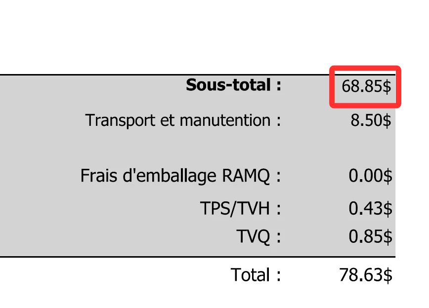
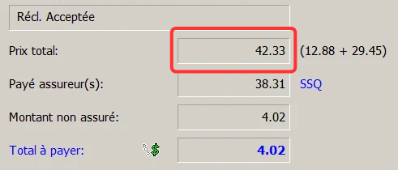
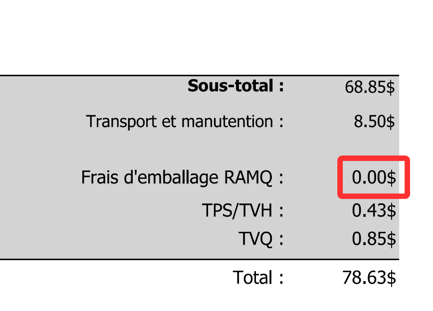
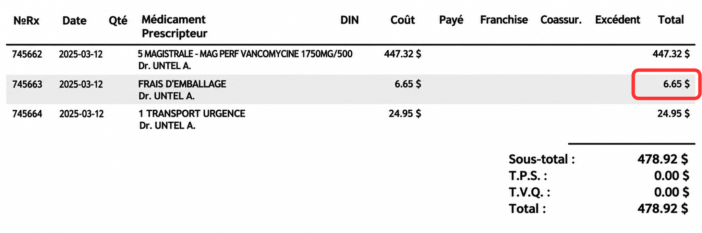
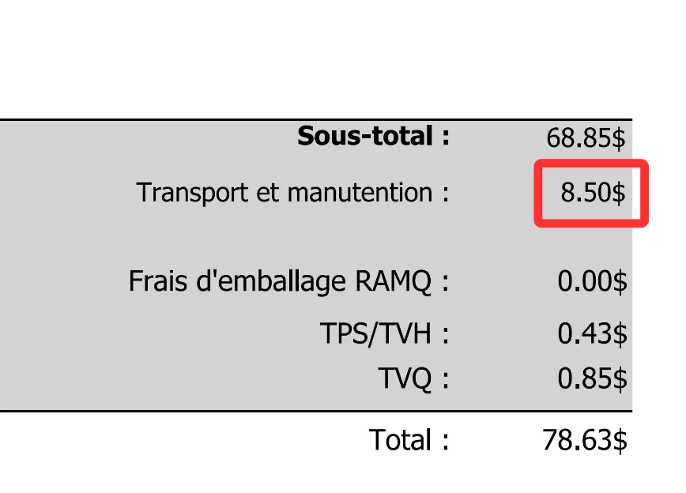
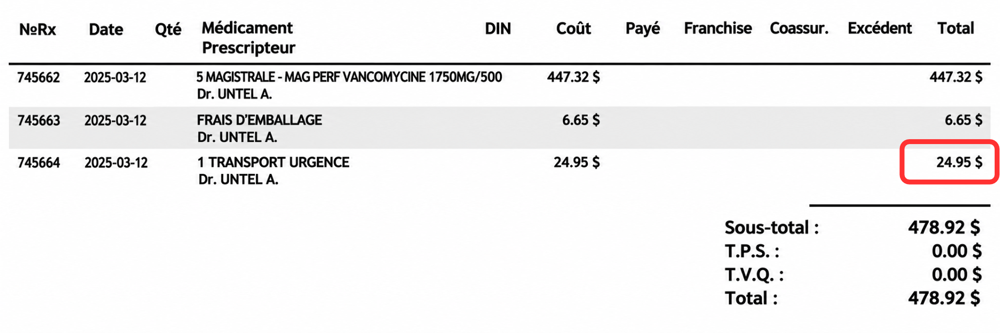
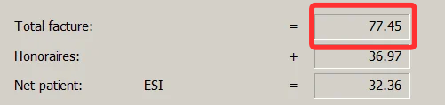

De la magistrale RxPro à la feuille de réclamation.
Ne saisissez aucun renseignement personnel sur le patient.
Sur la facture de Gentes et Tanguay, saisis le montant de la ligne Sous-total, avant le transport et les taxes.

Sur la facture d’Uniprix Blanchette, saisis le montant de la ligne Total.
Dans RxPro, relève le montant affiché à la ligne Prix total avant d’ajouter quoi que ce soit (frais additionnels (F6), les frais de transport et les frais d’emballage).

Le résultat F6 est négatif. Vérifiez les montants dans RxPro avant de poursuivre.
Étapes 1 et 2 : N/A RAMQ. Aucune charte privée ni formule de remboursement RAMQ n’est appliquée.
Sur la facture de Gentes et Tanguay, repère la ligne Frais d’emballage RAMQ.

Sur la facture d’Uniprix Blanchette, relève le montant dans la colonne Total de la ligne Frais d’emballage.

Sur la facture de Gentes et Tanguay, saisis le montant de la ligne Transport et manutention.

Sur la facture d’Uniprix Blanchette, relève le montant dans la colonne Total de la ligne Transport urgence.

Dans RxPro, relève le montant affiché à la ligne Prix total après avoir ajouté tous les frais, y compris les frais additionnels (F6), de transport et d’emballage, et avant de déduire la part de l’assurance.
FE + FT : — · Ce sous-total ne remplace pas le montant du papier bleu.
Un seul choix par groupe.
Praxiject 0,9 % 10 mL · DIN 99100894.
BD Posiflush 10 UI/mL 3 mL · DIN 99113757.
Les choix « NaCl pharmacie préparatrice » et « Héparine pharmacie préparatrice » activent automatiquement le produit correspondant ci-dessous. Le diviseur et le prix total sont calculés automatiquement. Les limites incluant les cents sont confirmées par la pharmacie. Sur le PDF original, la ligne « Marge » reçoit le taux de division : 65 %, 70 % ou 72 %.
Dans RxPro, ouvre la prescription en Lecture (L), puis ouvre la fenêtre Détail de la magistrale (54). Saisis le montant de la ligne Total facture.

Ces vérifications ne remplacent pas la validation professionnelle du pharmacien. Consultez la procédure originale pour les cas de couverture problématique ou d’assurance fermée.
Mention originale : « aucune copie modifiée ne sera acceptée ». Les textes et cadres originaux sont conservés. Les résultats calculables sont reportés automatiquement dans les deux exemplaires. Le profit calculé est également reporté.
À l’impression, sélectionnez le papier A4 et le recto verso sur le bord long. Les procédures sont incluses au verso.
Les données saisies dans le calcul en cours seront effacées.